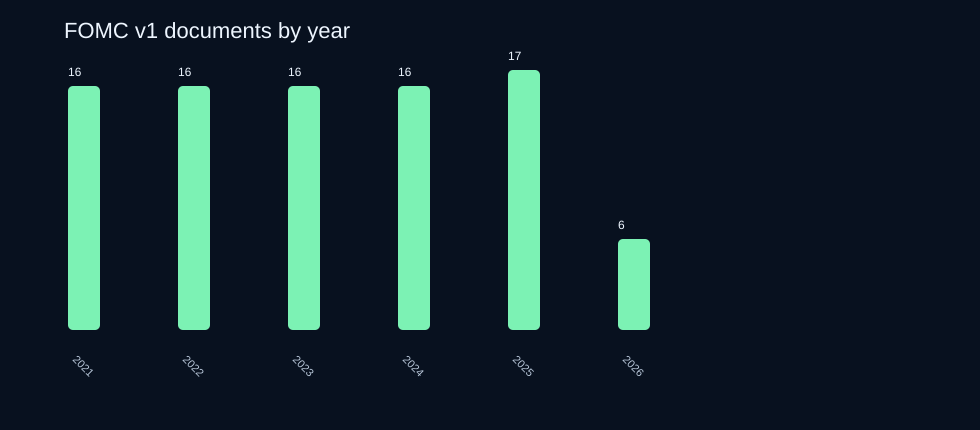
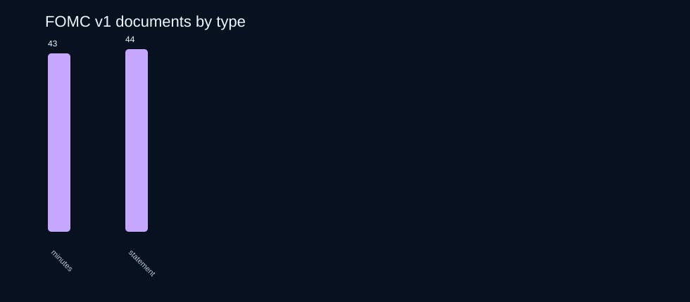

Macro Narrative Starter Dataset + Signal Notebook
A real v1 public macro text product: 87 cleaned FOMC statement/minutes documents, narrative term scores, source manifest, QA report, charts, and a starter notebook for macro narrative research.
Built for people testing narrative-momentum ideas who do not want to spend days collecting, cleaning, documenting, and scoring public macro text before doing any research.
87 documents2021-01-27 → 2026-04-29FOMC statements + minutesfull cleaned textauditable URLsno alpha promises
Buy v1 on Gumroad Download free sample View source manifest Read sample QA reportWhat is inside the paid v1 bundle
cleaned FOMC documents: 44 statements and 43 minutes.
date coverage from 2021-01-27 through 2026-04-29.
narrative term families: inflation, labor, growth, policy tight/ease, uncertainty, financial conditions.
Buyer promise
The pain
Before testing macro text ideas, researchers burn days on source discovery, HTML cleaning, date alignment, provenance notes, schemas, feature scoring, and leakage-safe notebook setup.
The shortcut
The v1 bundle gives you full cleaned text rows, source URLs, a scoring table, a source manifest, QA report, charts, and a notebook so you can start testing research ideas immediately.
v1 proof charts



Paid v1 files
| File | Purpose |
|---|---|
fomc_documents_v1.tsv | 87 full cleaned FOMC statement/minutes rows with date, URL, title, document type, text, excerpt, word/token counts, tags, and provenance note. |
narrative_term_scores_v1.tsv | Rule-based narrative term counts and per-1k-word intensities for each document. |
source_manifest_v1.tsv | Source family manifest, URLs, and license/terms notes. |
macro_narrative_v1_notebook.ipynb | Starter notebook for loading data, merging scores, and creating leakage-safe train/test splits. |
charts/ | SVG charts for fast inspection and report reuse. |
QA_REPORT_v1.md | Scope, checks, limitations, and provenance notes. |
Free sample
The free sample remains available so buyers can inspect the schema, source posture, and chart style before buying.
Download free sample v0.1 View sample rowsPrice
Macro Narrative Starter v1
Full v1 bundle: 87 documents, scores, source manifest, QA report, charts, and notebook.
Buy on GumroadFuture upgrades
Planned expansion modules: BEA/BLS/Treasury, richer notebooks, Parquet exports, and team license. Not included unless listed on Gumroad.
Not investment advice
This is a research workflow/data product, not a signal guarantee, investment advice, or promise of returns. It packages auditable public text and examples so you can do your own research faster.